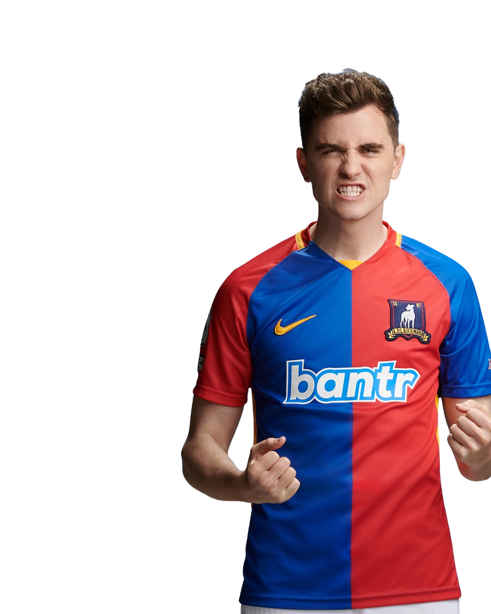

12
← Back to squad
ColinHughes
- Position
- Left Wing
- Squad number
- 12
- Nationality
- Welsh
- Birthplace
- Wales
- Former club
- Cardiff City
Colin Hughes is a Welsh winger who brings pace, width and attacking energy to AFC Richmond. Operating primarily from the left side, Hughes is capable of stretching opposition defences and contributing to Richmond's attacking transitions.
Before joining AFC Richmond, Colin played for Cardiff City. During his time with the Greyhounds, he has developed into a more mature and dependable member of the first-team squad.
His speed, work rate and ability to support both attacking and defensive phases make him a valuable option on the left flank.